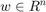
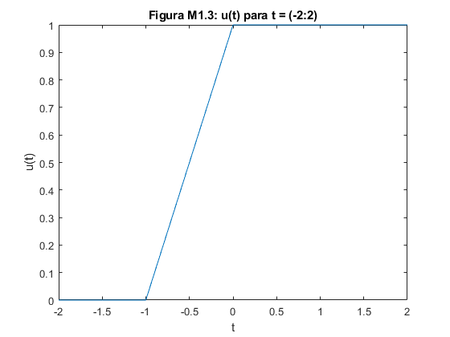
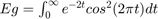

Práctica 02: Señales en tiempo continuo
Intituto Politécnico Nacional
Unidad Profesional Interdisciplinaria en Ingeniería y Tecnologías Avanzadas
Análisis de Señales y Sistemas
Grupo: 2MV1
Alumnos:
- Ordorica Muñoz Leonardo Antonio
- Carmona Bellido Marco Tulio
Contents
Introducción
MATLAB es un lenguaje de programación interpretado e interactivo, esto significa que a diferencia de C o Fortran no se generan ejecutables sino que un programa llamado interprete recibe órdenes y las ejecuta. Estas órdenes se comunican al intérprete mediante un lenguaje de programación que recibe el mismo nombre que el programa, Matlab. Entonces utilizar Matlab es equivalente a programar en Matlab. Matlab cuenta con una biblioteca de cálculo numérico y de ingeniería tan extensa como útil y el intérprete es extensible mediante distintos lenguajes compilados como C y Fortran. Matlab tiene la gran virtud convertir en triviales tareas fáciles como las operaciones elementales. Matlab, abreviatura de MATrix LABoratory, "laboratorio de matrices", como su nombre lo indica, trabaja con matrices siempre, por lo que se deben hacer ciertas consideraciones a la hora de realizar operaciones entre estas, tales como la multiplicación de matrices, entre otros. Se encuentra disponible como aplicación descargable e instalable en sistemas como Windows, OSX (Mac) y Linux. Página oficial de Productos MATLAB.
Aunque se tienen alternativas descargables, tambien existen opciones disponibles en línea (no descargables), tales como Octave Online, la cual es una plataforma casi idéntica a la sintaxis Matlab, con excepción de que en Octave Online se permiten algunos comandos e instrucciones que en Matlab no existen, un ejemplo son las instrucciones que se le pueden dar al declarar una variable, en Octave Online se le puede indicar que cierta variable es un entero positivo, etc. Una de las ventajas muy importantes de Octave es que es software libre (gratuito), que por otro lado, Matlab es un producto comercial. También existen otras alternativas como Jupyter, el cual trabaja con el lenguaje Python pero que igual es muy amigable. Matlab es un producto de MathWorks. Fue diseñado a finales de los 70 por Cleve Moler como una herramienta para evitar a sus estudiantes tener que aprender Fortran. Apareció como producto comercial en el año 1984 y desde entonces ha ido gandando adeptos, sobretodo en el campo del control lineal y no lineal y en la ingeniería en general.
Cursos para Matlab y Octave:
Objetivos
- Manipulación básica de MATLAB
- Gráficas de señales reales y complejas continuas
- Transformación de señales continuas (escalamientos y traslaciones)
- Calculo de energía y potencia de señales continuas
Desarrollo
Problema 1
Creemos una funcion con el nombre fun1 que reciba dos parametros, como se muestra a continuacion:
function [outputArg1] = fun1(a,w) outputArg1 = outputArg1 = a./(a^2. + w.^2); end
La funcion funciona para y . Notece el uso del punto tanto en el numerador como en el denominador, esto se debe a que puede ser un escalar, un vector o una matriz, de ser así el punto le indica a matlab que tando la divición como multiplicación o cualquier otro operacion que involucre a la debe realizar por cada elemento dentro de .
Problema 2
Ahora creemos una funcion de que realice la operacion pasada con pero que grafique contra , para efectos practicos solo se mostrara el uso de la funcion y la grafica que esta genera. Primero se creará el vector y posteriormente se llamara a nuestra funcion que mostrara la grafica a la cual llamaremos fun2 que recibira a y , tambien se le asignara a un valor de 1 para este ejemplo.
w = -2:0.001:2; a = 1; fun2(w,a);
Problema 3
Para el siguiente problema construiremos una funcion esta funcion sera la transformada de Fourier de para . A esta funcion la llamaremos fun3 su unico parametro de entrada sera el valor el vector que contiene los valores en los que sera evaluada la funcion.
w = -10:0.001:10; fun3(w);
Problema 4
M1.1 Funciones Inline (aqui son anónimas)
Se define la función como una fución anónima con la siguiente sintaxis "nombredelafuncion=@(argumentos) expresionmatematica"
f=@(t) exp(-t).*cos(2*pi*t);
Se le puede pasar como argumento una variable
t=0; f(t)
ans =
1
Pero también se puede pasar el valor directamente y se obtiene el mismo resultado
f(0)
ans =
1
Las entradas vectoriales permiten la evaluación de múltiples valores simultáneamente. Considere la tarea de trazar f(t) sobre el intervalo (-2 ≤ t ≤ 2). El comportamiento general de la función es claro: f(t) debe oscilar cuatro veces con comportamiento decreciente. Dado que los bosquejos a mano precisos son engorroso, las gráficas generadas por MATLAB son una alternativa atractiva. Como se ilustra en el siguiente ejemplo, se debe tener cuidado para garantizar resultados fiables. Supongamos que el vector t se elige para incluir solo los números enteros contenidos en (-2 ≤ t ≤ 2), a saber, [-2, -1, 0, 1, 2].
t=(-2:2);
Esta entrada vectorial es evaluada para entregar en la salida una salida vectorial
f(t)
ans =
7.3891 2.7183 1.0000 0.3679 0.1353
El comando plot grafica el resultado, el cual se muestra en la Figura M1.1.
figure plot(t,f(t)); xlabel('t'); ylabel('f(t)'); grid; title('Figura M1.1: f(t)=e^{-t}cos(2\pit) para t=(-2:2)')

Las líneas de cuadrícula, agregadas mediante el comando grid, ayudan a la identificación de la función. Desafortunadamente, la gráfica no ilustra el comportamiento oscilatorio esperado. Se requieren más puntos para representar adecuadamente f(t). La pregunta, entonces, es ¿cuántos puntos son suficientes? Si se eligen pocos puntos, la información se pierde. Si se eligen demasiados puntos, la memoria y el tiempo se pierden. Se necesita un equilibrio. Para funciones oscilatorias, el trazado de 20 a 200 puntos por oscilación es normalmente adecuado. Para el presente caso, se elige t para dar 100 puntos por oscilación.
t=(-2:0.01:2);
Nuevamente, la función es evaluada y graficada. El resultado, mostrado en la Figura M1.2 es una representación precisa de f(t).
figure plot(t,f(t)); xlabel('t'); ylabel('f(t)'); grid; title('Figura M1.2: f(t)=e^{-t}cos(2\pit) para t=(-2:0.01:2)')
M1.2: Operadores relacionales y la función escalón unitario
La función escalon unitario u(t) surge naturalmente en muchas situaciones prácticas. Por ejemplo, un paso de unidad puede modelar el acto de encender un sistema. Con la ayuda de operadores relacionales, los objetos en línea pueden representar la función de paso de unidad.
En MATLAB, un operador relacional compara dos elementos. Si la comparación es verdadera, se devuelve un verdadero lógico (1). Si la comparación es falsa, se devuelve un falso lógico (0). Algunas veces llamadas funciones de indicador, los operadores relacionales indican si una condición es verdadera. Hay seis operadores relacionales disponibles: < , >, < =, > =, == y ~=.
La función escalón unitario se define facilmente utilizando el operador relacional >=.
u=@(t) t>=0;
Cualquier función con una discontinuidad de salto, como el escalón unitario, es difícil de trazar. Considere trazar u(t) usando t = (-2:2).
t=(-2:2); figure plot(t,u(t)); xlabel('t'); ylabel('u(t)'); title('Figura M1.3: u(t) para t = (-2:2)')
Dos problemas significativos son evidentes en la gráfica resultante, que se muestra en la Figura M1.3. En primer lugar, MATLAB escala automáticamente los ejes del trazado para delimitar estrechamente los datos. En este caso, esta característica normalmente deseable, oculta la mayor parte de la trama. En segundo lugar, MATLAB conecta los datos del trazado con las líneas, lo que dificulta el logro de una discontinuidad de salto real. La resolución aproximada del vector t enfatiza el efecto al mostrar una línea de pendiente errónea entre t = -1 y t = 0.
El primer problema se corrige al ampliar verticalmente el cuadro delimitador con el comando axis. El segundo problema se reduce, pero no se elimina, agregando puntos al vector t.
t=(-2:0.01:2); figure plot(t,u(t)); xlabel('t'); ylabel('u(t)'); axis([-2 2 -0.1 1.1]); title('Figura M1.4: u(t) para t=(-2:0.01:2) con modificación de ejes');
El argumento vectorial de cuatro elementos del eje especifica el mínimo del eje x, el máximo del eje x, el mínimo del eje y, y el máximo del eje y, respectivamente. Los resultados mejorados se muestran en la Fig. M1.4.
Los operadores relacionales se pueden combinar utilizando AND lógico, OR lógico y negación lógica: &, | y ~, respectivamente. Por ejemplo, (t>0) y (t<1) y ~((t < = 0) | (t > = 1)) ambos prueban si 0<t<1. Para demostrar, considere definir y trazar el pulso unitario p(t)= u(t)- u(t-1), como se muestra en la Fig. M1.5.
p=@(t) (t>=0 & t<1); t=(-1:0.01:2); figure plot(t,p(t)); xlabel('t'); ylabel('p(t)= u(t)- u(t-1)'); axis([-1 2 -.1 1.1]); title('Figura M1.5: p(t)= u(t)- u(t-1) sobre t=(-1:0.01:2)');
Para los operandos escalares, MATLAB también admite dos construcciones lógicas de cortocircuito. Un AND lógico de cortocircuito se realiza utilizando &&, y un OR lógico de cortocircuito se realiza utilizando | |. Los operadores lógicos de cortocircuito a menudo son más eficientes que los operadores lógicos tradicionales porque prueban la segunda parte de la expresión solo cuando es necesario. Es decir, cuando la expresión escalar A se encuentra falsa en (A && B), la expresión escalar B no se evalúa, ya que un resultado falso ya está garantizado. De manera similar, la expresión escalar B no se evalúa cuando la expresión escalar A se encuentra verdadera en (A | | B), ya que un resultado verdadero ya está garantizado.
M1.3: Visualizando Operaciones el la Variable Independiente
Se encuentran comúnmente dos operaciones en la variable independiente de una función: desplazamiento y escalamiento. Los objetos Inline (en este caso anónimos) son adecuados para investigar ambas operaciones. Considere una versión realizable de f(t). Desafortunadamente, MATLAB no puede multiplicar los objetos inline (en este caso anonimos). Es decir, MATLAB informa un error para g = f*u cuando f y u son objetos inline (en este caso anónimos). Más bien, g(t) necesita definirse explícitamente.
g=@(t) exp(-t).*cos(2*pi*t).*(t>=0);
Una operación combinada de desplazamiento y escalamiento se representa por g(at+b), donde a y b son constantes reales arbitrarias. Como ejemplo, considere graficar g(2t+1) sobre (-2 ≤ t ≤ 2). Con a = 2, la función se comprime por un factor de 2, lo que da como resultado el doble de oscilaciones por unidad t. Añadiendo la condición b > 0, la forma de onda se desplaza hacia la izquierda. Dada la función inline(en este caso anónima) g, una grafica precisa es casi trivial de obtener.
t=(-2:0.01:2); figure plot(t,g(2*t+1)); xlabel('t'); ylabel('g(2t+1)'); grid; title('Figura M1.6: g(2t+1) sobre t=(-2:0.01:2)');
La Figura M1.6 confirma la compresión de forma de onda esperada y el desplazamiento a la izquierda. Como comprobación final, tenga en cuenta que la función g(·) se activa cuando el argumento de entrada es cero. Por lo tanto, g(2t+1) debe encenderse cuando 2t+1 = 0 o en t = ?0.5, un hecho confirmado nuevamente por la Figura M1.6.
A continuación, considere la posibilidad de trazar g(-t+1) sobre (-2 ≤ t ≤ 2). Desde a < 0, la forma de onda se reflejará. Al agregar la condición b > 0, la forma de onda final se desplaza hacia la derecha.
figure plot(t,g(-t+1)); xlabel('t'); ylabel('g(-t+1)'); grid; title('Figura M1.7: g(-t+1) sobre t=(-2:0.01:2)');
La Figura M1.7 confirma tanto la reflexión como el cambio a la derecha.
Hasta este punto, las Figuras M1.6 y M1.7 se pueden bosquejar razonablemente a mano. Considere trazar la función más complicada h(t) = g(2t+1) + g(-t+1) sobre (-2 ≤ t ≤ 2) (Figura. M1.8). En este caso, un boceto a mano preciso es bastante difícil. Con MATLAB, el trabajo es mucho menos complicado.
figure plot(t,g(2*t+1)+g(-t+1)); xlabel('t'); ylabel('h(t)'); grid; title('Figura M1.8: h(t)=g(2t+1) + g(-t+1) sobre t=(-2:0.01:2)');
M1.4: Integración numérica y estimación de la energía de la señal
Señales interesantes a menudo tienen representaciones matemáticas no triviales. Calcular la energía de la señal, que implica integrar el cuadrado de estas expresiones, puede ser una tarea desalentadora. Afortunadamente, muchas integrales difíciles se pueden estimar con precisión mediante técnicas de integración numérica. Incluso si la integración parece simple, la integración numérica proporciona una buena manera de verificar los resultados analíticos.
Para comenzar, considere la señal simple . La energía de x(t) se expresa como . La integración produce . La integral de energía también puede ser evaluada numéricamente. La Figura 1.27 ayuda a ilustrar el método simple de aproximación rectangular: evalúe el integrando en puntos uniformemente separados por , multiplique cada uno por para calcular las áreas del rectángulo, y luego sume todos los rectángulos. Figura 27: Representación de una señal en terminos de componentes de impulso y escalon.
{kind=link}
Primero, creamos la función x (t).
x=@(t) exp(-t).*((t>=0)&(t<1));
Dejamos , se crea un vector de tiempo adecuado.
t=(0:0.01:1);
El resultado final es computado usando el comando sum.
E_x=sum(x(t).*x(t)*0.01)
E_x =
0.4367
El resultado no es perfecto, pero al 1% de error relativo, está cerca. Al reducir , se mejora la aproximación. Por ejemplo, = 0.001 produce E_x = 0.4328, o 0.1% de error relativo. Aunque es fácil de visualizar, la aproximación rectangular no es la mejor técnica de integración numérica. La función de MATLAB quad (integral para versiones recientes) implementa una mejor técnica de integración numérica llamada cuadratura recursiva adaptativa de Simpson. Para operar, quad requiere una función que describa el integrando, el límite inferior de integración y el límite superior de integración. Tenga en cuenta que no es necesario especificar .
Para usar quad para estimar Ex, primero se debe describir el integrando.
x_squared=@(t) exp(-2*t).*((t>=0)&(t<1));
Estimando Ex inmediatamente sigue.
E_x= quad(x_squared,0,1)
E_x =
0.4323
En este caso, el error relativo es -0.0026%.
Se pueden usar las mismas técnicas para estimar la energía de señales más complejas. Considere g(t), definido previamente. La energía se expresa como, . Existe una solución de forma cerrada, pero requiere un poco de esfuerzo. MATLAB proporciona una respuesta más rápidamente.
g_squared=@(t) exp(-2*t).*(cos(2*pi*t).^2).*(t>=0);
Aunque el límite superior de integración es infinito, la envoltura decreciente exponencial garantiza que g(t) sea efectivamente cero mucho antes de t = 100. Por lo tanto, se usa un límite superior de t = 100 junto con .
t=(0:0.001:100); E_g=sum(g_squared(t)*0.001)
E_g =
0.2567
Se obtiene una aproximación ligeramente mejor con la función quad.
E_g=quad(g_squared,0,100)
E_g =
0.2562
Problema 5
1.2.2.- Para la señal x(t) ilustrada en la Figura P1.2-2, bosqueje: * a. x(t-4) * b. x(t/1.5) * c. x(-t) * d. x(2t-4) * e. x(2-t)
{kind=link}
Primero se define la función (utilizaremos funciones anónimas)
t=(-50:0.01:50); x=@(t) -t.*((t>=-4)&(t<0))+t.*((t>=0)&(t<=2)); plot(t,x(t)) xlabel('t'); ylabel('x(t)'); grid; axis([-6 4 -2 6]); title('x(t)'); ax = gca; ax.XAxisLocation = 'origin'; ax.YAxisLocation = 'origin';
- a. x(t-4)
plot(t,x(t-4)) xlabel('t'); ylabel('x(t-4)'); grid; axis([-2 10 -2 6]); title('x(t-4)'); ax = gca; ax.XAxisLocation = 'origin'; ax.YAxisLocation = 'origin';
- b. x(t/1.5)
plot(t,x(t/1.5)) xlabel('t'); ylabel('x(t/1.5)'); grid; axis([-9 6 -2 6]); title('x(t/1.5)'); ax = gca; ax.XAxisLocation = 'origin'; ax.YAxisLocation = 'origin';
- c. x(-t)
plot(t,x(-t)) xlabel('t'); ylabel('x(-t)'); grid; axis([-4 6 -2 6]); title('x(-t)'); ax = gca; ax.XAxisLocation = 'origin'; ax.YAxisLocation = 'origin';
- d. x(2t-4)
plot(t,x(2*t-4)) xlabel('t'); ylabel('x(2t-4)'); grid; axis([-1 4 -2 6]); title('x(2t-4)'); ax = gca; ax.XAxisLocation = 'origin'; ax.YAxisLocation = 'origin';
- e. x(2-t)
plot(t,x(2-t)) xlabel('t'); ylabel('x(2-t)'); grid; axis([-2 8 -2 6]); title('x(2-t)'); ax = gca; ax.XAxisLocation = 'origin'; ax.YAxisLocation = 'origin';
Problema 6
Problema 7
Referencias
- Guillem Borrell i Nogueras. (2007). Octave: Una alternativa real a Matlab a coste cero. Marzo 31, 2019, de Universidad Politécnica de Madria Sitio web: https://torroja.dmt.upm.es/media/files/paper_logrono.pdf
- Martínez R.,Senales y Sistemas: Una perspectiva. Recuperado 19 marzo, 2019, de <http://rafneta.github.io>
- Lathi, B. P.. (2005). Linear Systems and Signals. New York: Oxford University Press, Inc.